CASE STUDY · 01
项目全景概览
基于 STAR 原则的项目拆解Situation｜背景困境
产品从单一命理工具扩展为测算、咨询、内容、直播与课程平台，功能持续叠加，但信息架构与用户路径没有同步重构。用户进入产品后看不懂差异，也不知道从哪里开始。
Task｜核心任务
围绕“降低决策成本”完成系统性体验升级：建立清晰起点、强化服务信任、缩短咨询与付费路径，并让多业务场景具备可复用的设计基础。
Action｜设计动作
- 结合版本演进、用户路径、行为数据与反馈，收敛“看不懂 / 不知道从哪开始 / 不敢付费”三类问题。
- 首页前置 AI 对话与核心服务，用用户决策逻辑重排信息层级。
- 串联测算、老师咨询、直播课程与消息触达，减少跳转和中断。
- 搭建原子—分子—组织—模板—页面组件库，并用 GPT 分析验证假设。
Result｜业务结果
DISCOVERY · 02
设计洞察-页面改版体验
从复杂的信息浏览，转向以结果与引导为核心的服务路径，降低用户理解与决策成本。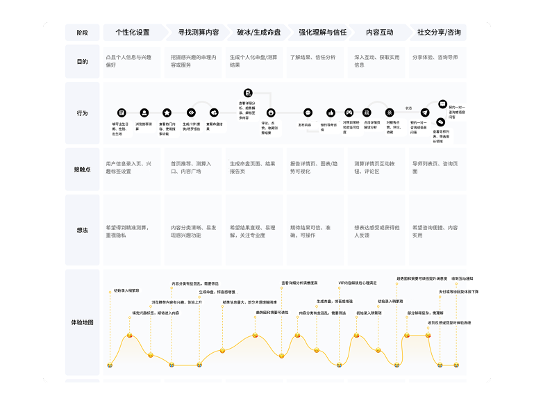
过程中的思考点
- 🤔 用户进入首页真正想要什么
- 用户需要“结果 + 引导”，而不是“信息浏览”。
- ✍️ 首页应该承担什么角色
- 提供明确起点，引导用户行动，缩短核心服务转化路径。
- 🧑💼 如何降低用户决策成本
- 用“对话 + 推荐”替代“信息筛选”。
设计洞察-产品诉求
提升整体用户体验针对现有体验问题，产品需要从“信息展示逻辑”转向“用户决策逻辑”，通过优化信息结构与用户路径，帮助用户更快理解产品价值并完成操作。
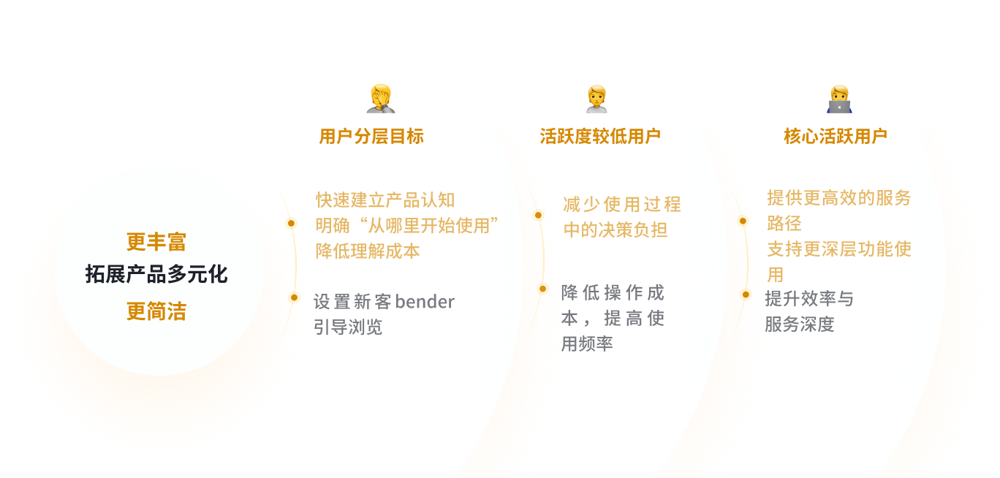
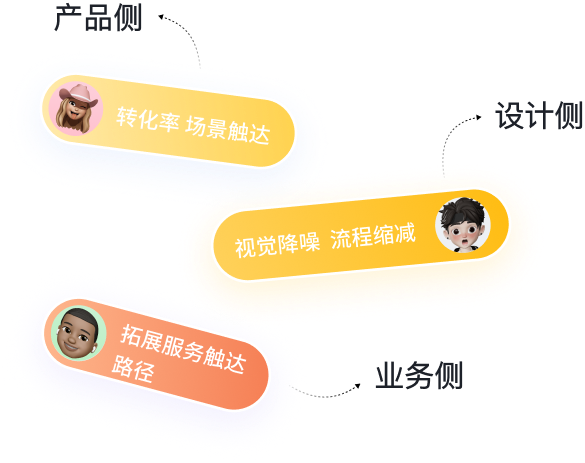
当前产品问题并非功能不足，而是信息结构与路径设计未围绕“用户决策”展开。
页面信息复杂、入口分散、路径较长，用户在关键节点需要进行多次判断，最终影响咨询转化与付费行为。
RESEARCH · 03
设计洞察-体验洞察报告
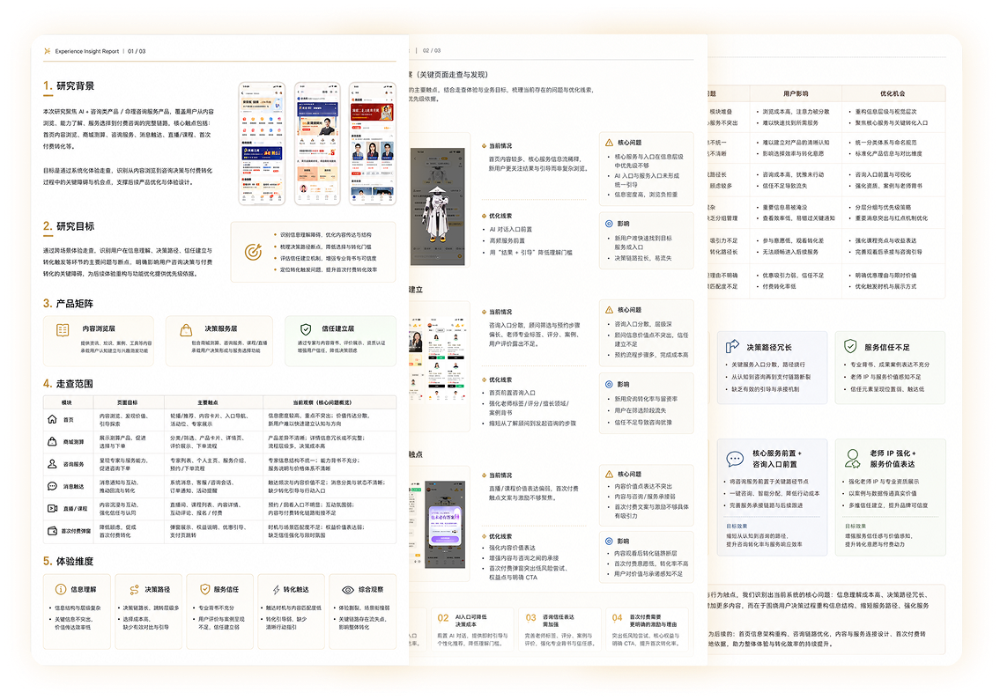
STRATEGY · 04
聚焦问题-策略拆解
从复杂的信息浏览，转向以结果与引导为核心的服务路径，降低用户理解与决策成本。用户核心需求
“结果 + 指引 + 快速决策”通过对用户行为路径、咨询转化流程及页面使用情况分析发现。
调研与行为洞察
“结果 + 指引 + 快速决策”通过对用户行为路径、咨询转化流程及页面使用情况分析发现。
当前产品问题并非功能不足，而是信息结构与用户路径未围绕“决策效率”设计。页面结构复杂、入口分散、表达偏解释型，用户在关键路径中需要进行大量筛选与判断，最终影响咨询转化与付费行为。
SYSTEM · 05
设计语言
页面规则
先梳理页面结构与内容层级，再让 Codex 按统一规则搭建可复用组件。
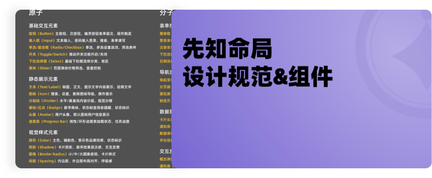
结构规范
以统一的栅格、间距和对齐方式组织页面，让信息层级更清楚。
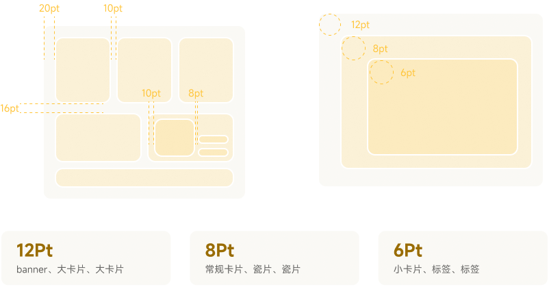
DESIGN SYSTEM · 06
设计组件搭建
从页面提取组件
Codex 按页面结构提取重复元素，建立统一的色彩、按钮、图标和卡片规则。
组件规范
复用所有颜色与图标，让组件样式与页面保持一致。
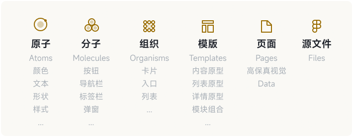
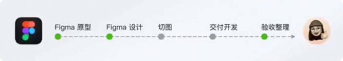
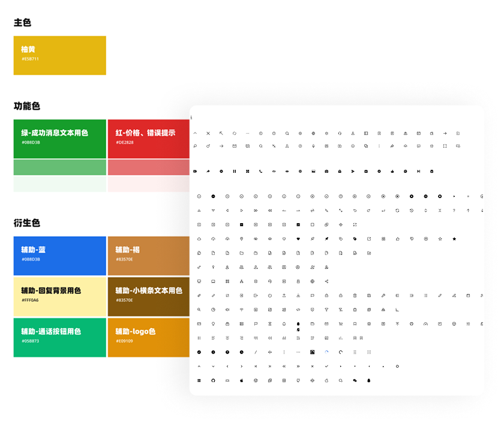
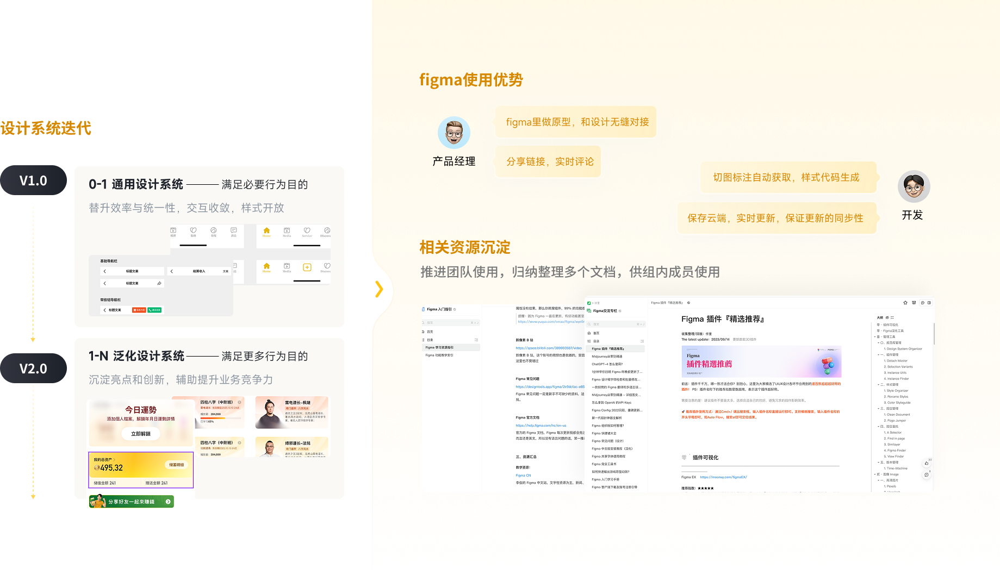
SOLUTION · 07
解决问题-框架重构
从传统、密集的内容首页，转向清晰的服务入口与转化分区。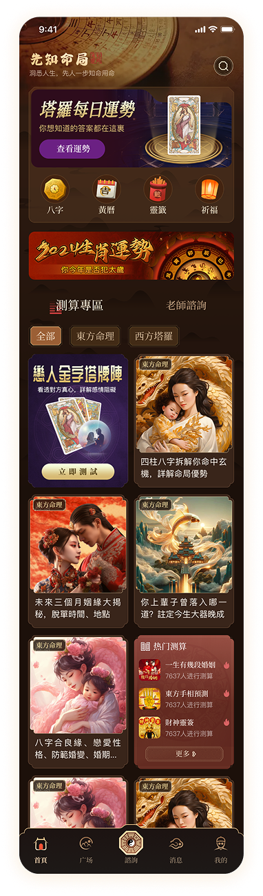
DELIVERY · 08
解决问题-首页方案落地
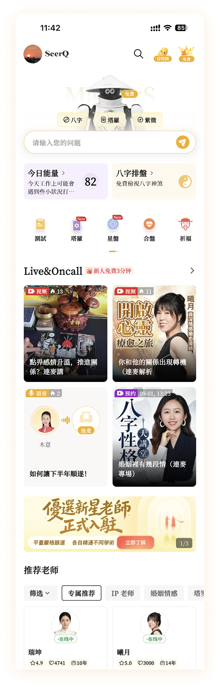
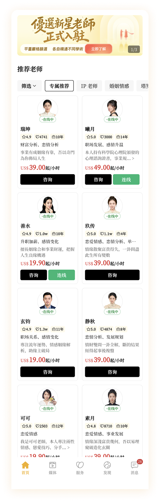
AI 对话入口领先
将 AI 对话模块放置于首页首屏，作为用户进入产品的第一个交互入口。用户无需理解复杂的产品结构，即可通过自然语言直接提问，快速进入服务流程。
首页信息结构重构
重新规划首页模块优先级：核心服务领先；次级内容后置；非关键内容弱化，形成“入口服务转化”。
数据提升
适配海外用户认知
核心服务（八字、塔罗、星盘等）以通用图标 + AI 对话卡片形式置顶。
信息架构重构
用留白、卡片分区重构信息层级，视觉焦点前置，形成视觉焦点，直接引导用户发起互动。
核心功能层级前置
消除文化壁垒，适配多语言、多地区市场，品牌全球知名度提升。
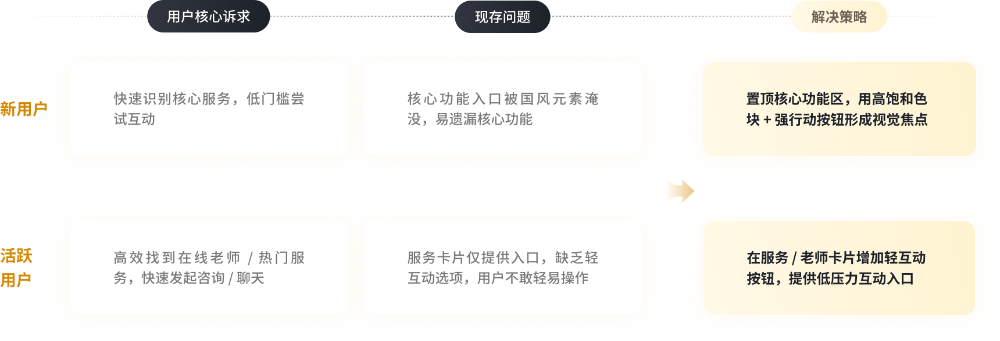
EXPERIMENT · 09
AI对话入口优化 A/B 测试复盘
首页原有功能入口较分散，用户进入产品后缺乏明确本次优化尝试通过 AI 对话入口前置，建立更符合用户的交互入口模式。
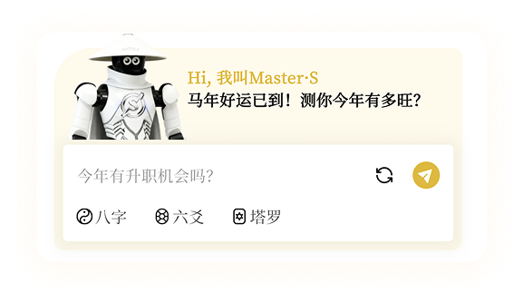
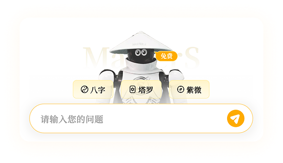
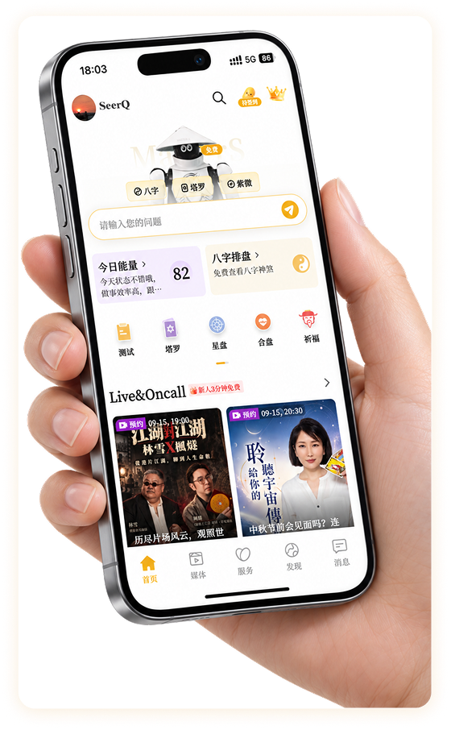
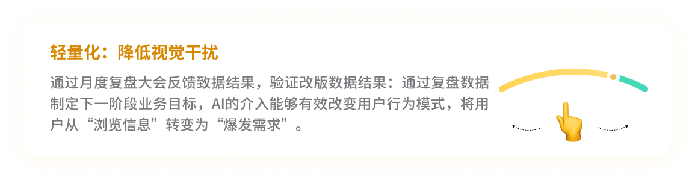
PRODUCT PAGES · 10
快速触达 / 「泛浏览」到「精准下单」
商城测算页面展示商城「测算」页是用户进入付费命理服务的第一触点，核心目标是让用户在 10 秒内找到「符合需求的测算服务」并发起购买 / 咨询，设计策略完全围绕「信息分层、优先级强化、路径简化」三大核心展开。
核心服务前置：降低「找服务」的认知成本
顶部直接展示「东方命理 / 西方占卜」两大核心分类，默认选中用户需求最高的「东方命理」，用户无需二次筛选，直接进入高频服务场景。
服务列表的优先级强化：减少决策干扰
每个服务卡片采用「主标题 + 副标题」的极简结构，主标题突出服务名称，副标题用一句话讲清核心价值（如「专业亲批 · 一生运势」「命中注定的两个人」），避免冗余信息干扰，让用户 1 秒 get 服务价值。
功能路径前置：降低转化门槛
服务卡片直接作为点击入口，用户点击卡片即可进入服务详情，无需额外跳转，实现「1 步完成服务选择」。
信息页面
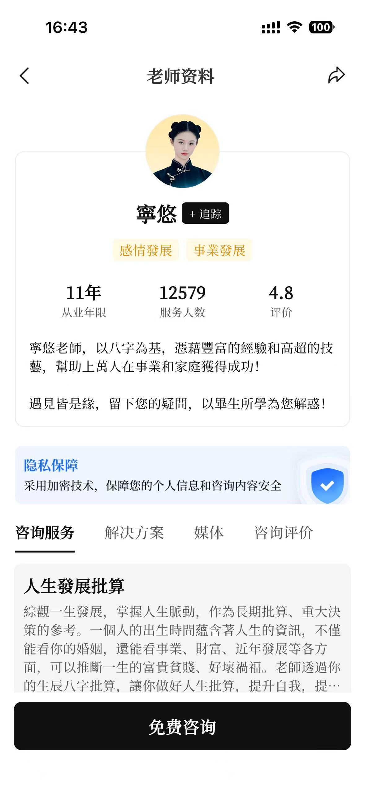
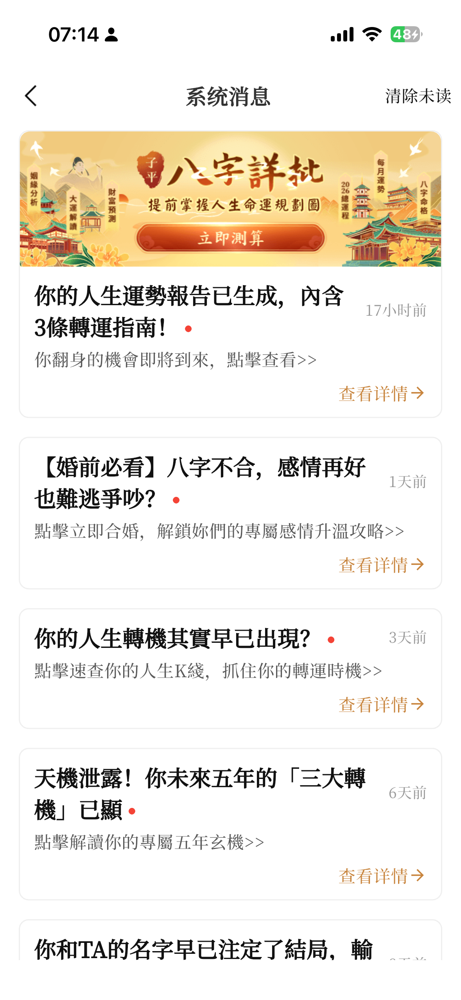
老师咨询对话页面
符合用户「先了解老师再咨询后付费」的决策路径，转化路径自然不生硬。专业信息展示强化老师 IP，提升用户付费意愿，同时沉淀用户与老师的长期关系。
系统消息页面
通知与营销融合：顶部用 banner 展示付费服务，直接引导用户点击测算。信任背书强化：通知内容用强吸引力文案，提升用户点击意愿，同时用「查看详情」按钮引导进一步转化。
CONSULTATION · 11
咨询页面
顶部搜索 + 分类标签，减少无效浏览
多少钱？优惠信息（价格刺激层）卡片直接展示优惠后价格与优惠金额
谁给我提供服务？老师介绍（信任建立层）头像、姓名、擅长领域、评分与咨询人数
我能得到什么？权益介绍（服务价值层）清晰解释付费后能获得的内容
大家的评价怎么样？用户评价（信任背书层）评分 + 咨询人数，用真实数据做背书
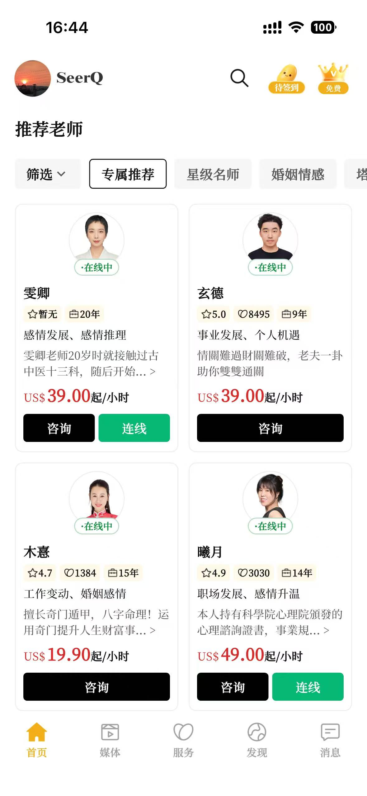
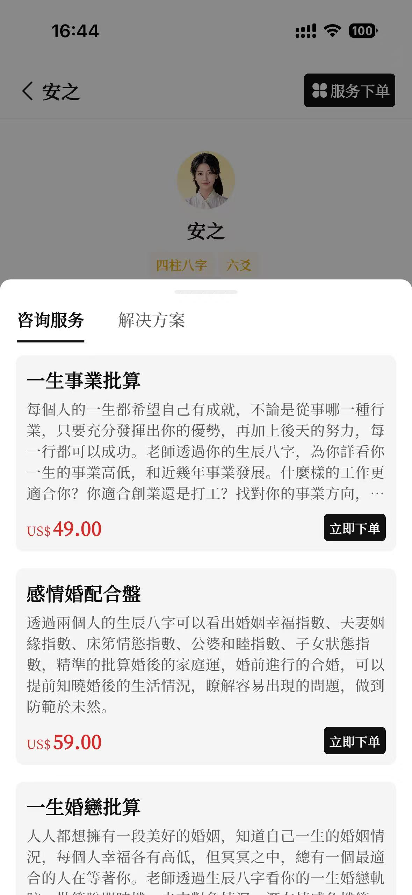
老师讲堂 / 直播页面
内容直接承接互动与咨询，不再让用户多次跳转。流量精准承接
“老师讲堂”模块直接展示直播中 / 预告内容，用直播中、强提醒等视觉词抓住用户注意力，实现首页流量向直播间的高效导流。
互动路径轻量化
底部输入框 +「加助理」快捷按钮，用户 1 步即可发起咨询 / 添加私域，降低互动门槛。
IP 强化
顶部展示老师头像、名称、「关注」按钮，强化个人 IP，提升用户复看率。
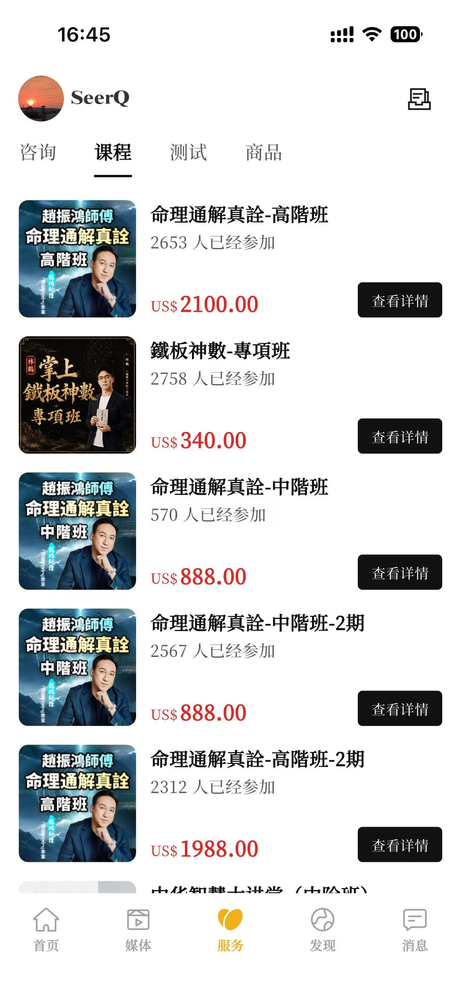
AI GROWTH · 12
搭建 GPT 用户分析需求
优化优惠券弹窗与挽留弹窗设计
先知命局在核心付费链路中存在明显流失问题：用户查看部分内容后离开；用户对完整报告付费意愿不足；弹窗点击率与最终转化率偏低。
搭建一个基于 GPT 用户分析的 AI 增长策略体系
利用 GPT 对用户行为、流失节点与决策心理进行分析，建立 AI 驱动的增长策略工作流，辅助团队快速拆解用户在优惠券弹窗、退出挽留、付费转化等关键场景中的核心痛点。
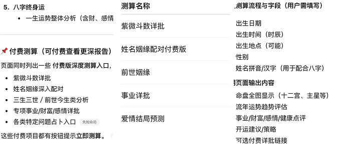
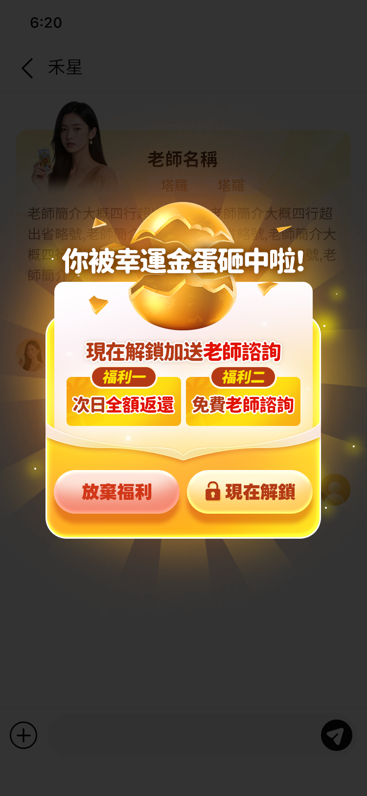
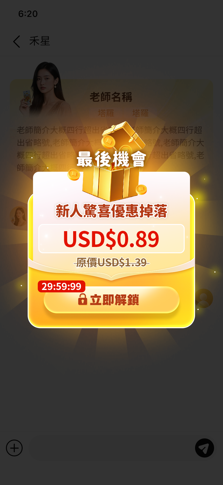
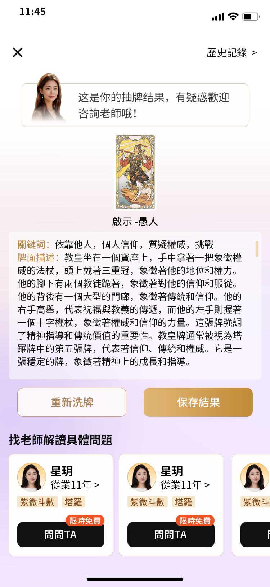
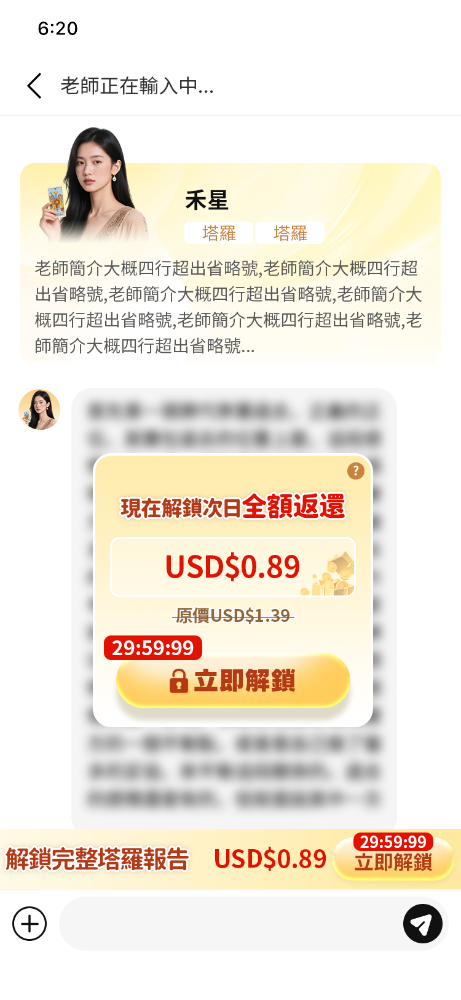
建立弹窗转化模型
利用 AI 分析用户价格敏感点，降低首次付费门槛
通过 GPT 对用户评论与行为进行分析后发现：
影响首次付费的核心因素包括：
- 价格敏感
- 风险顾虑
- 不确定结果价值
用户真正需要的不是“优惠”，而是“低风险尝试理由”。
驱动设计策略
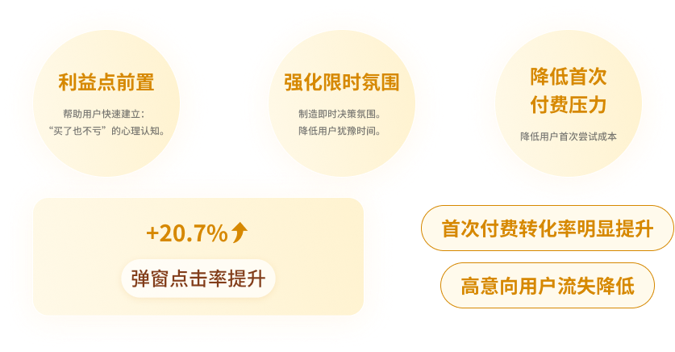
交互原型 · 付费弹窗转化链路
点击手机里闪烁的热区，体验从抽牌结果到两级挽留弹窗的完整路径；也可以直接点左侧步骤切换。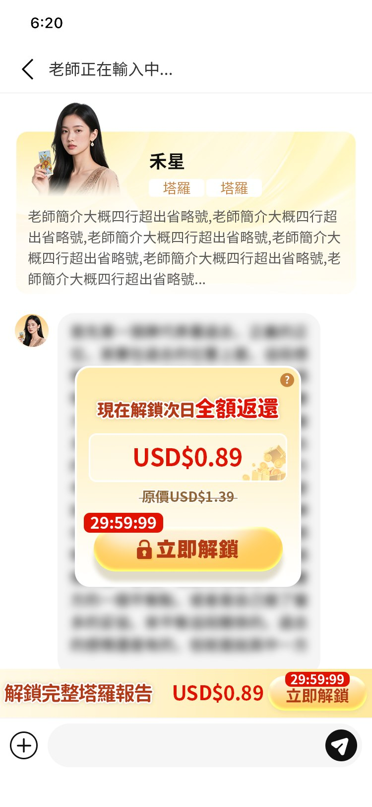
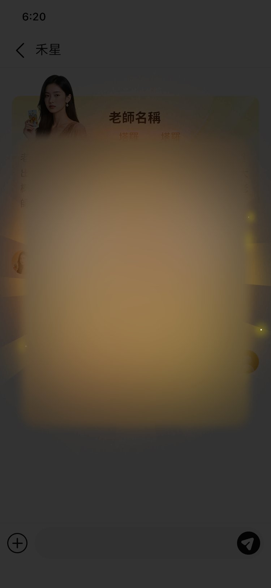
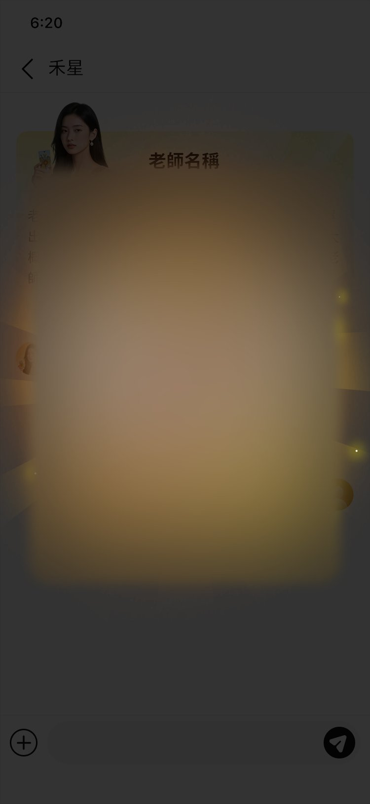
OUTCOME · 13